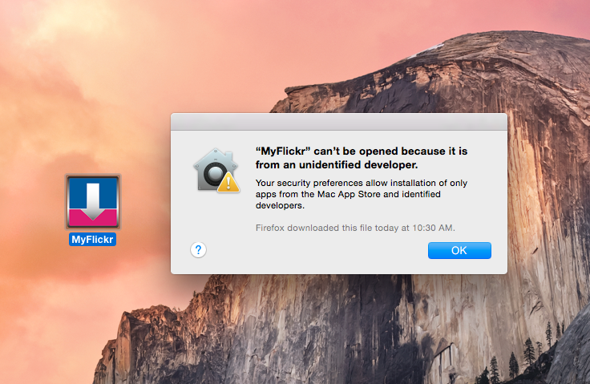
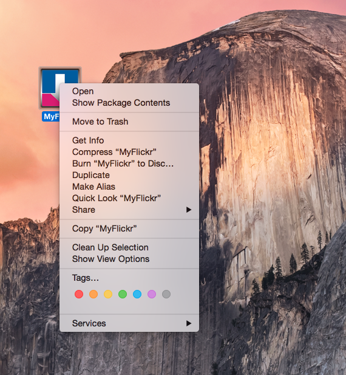
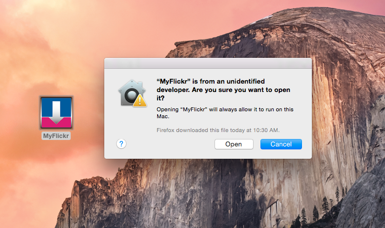

MyFlickr
MyFlickr is a Flickr Application, which is a light backup tool for Mac OS which downloads all original photos in your sets.
Features
- Downloads all original photos in your sets.
- View your photostream when you click your account.
- View all photos in one set when you double click the set.
- You can choose the download destination.
Screenshots


Notes
If you get the popup below, then please follow the steps to open MyFlickr:

- Ctrl+click or right click on MyFlickr and select Open from the contextual menu.
- This time you'll see the popup below instead of a message saying the app can't be opened at all.
- Click Open if you're sure that the app is from a trusted source.
- MyFlickr will open and you'll be able to use it normally now.

